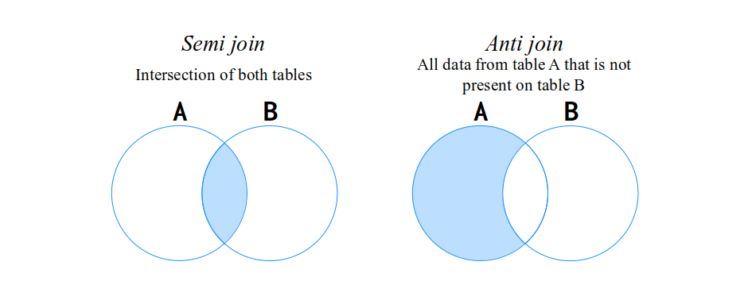
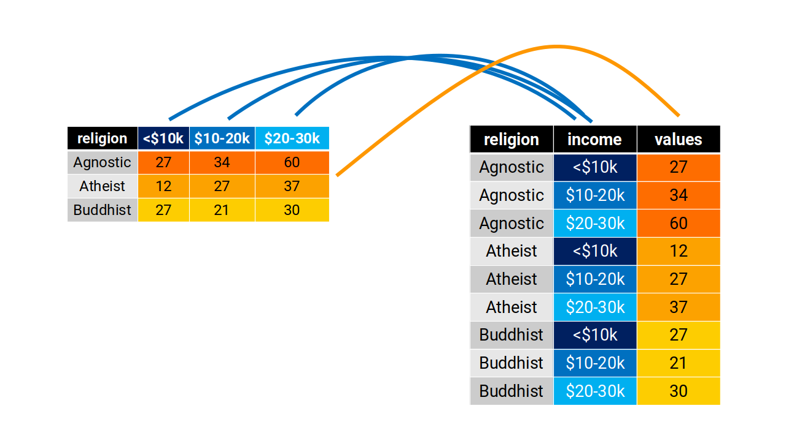

At Chapter 5 I introduced six core types of transformations over Spark DataFrames. In this chapter, I will expand your knowledge by introducing five more types of transformations available to Spark DataFrames, which are:
Replacing null values;
Removing duplicated values;
Merging multiple DataFrames with UNION operations;
Merging multiple DataFrames with JOIN operations;
Rows to columns with Pivot operations;
Collecting and explode operations;
8.2 Removing duplicated values from your DataFrame
Removing duplicated values from DataFrames is a very commom operation in ETL pipelines. In pyspark you have two options to remove duplicated values, which are:
distinct() which removes all duplicated values considering the combination of all current columns in the DataFrame;
drop_duplicates() or dropDuplicates() which removes all duplicated values considering a specific combination (or set) of columns in the DataFrame;
These three methods above are all DataFrames methods. Furthermore, the methods drop_duplicates() and dropDuplicates() are equivalent. They both mean the same thing, and have the same arguments and perform the same operation.
When you run drop_duplicates() or dropDuplicates() without any argument, they automatically use by default the combination of all columns available in the DataFrame to identify the duplicated values. As a consequence, over this specific situation, the methods drop_duplicates() or dropDuplicates() become equivalent to the distinct() method. Because they use the combination of all columns in the DataFrame.
Lets pick the supermarket_sales DataFrame exposed below as an example. You can see below, that this DataFrame contains some duplicated values, specifically on the transaction IDs “T001” e “T004”. We also have some “degree of duplication” on the transaction ID “T006”. But the two rows describing this ID “T006” are not precisely identical, since they have a small difference on the quantity column.
We can remove these duplicated values by using the distinct() method. In the example of transaction ID “T004”, all duplicated rows of this ID contains the same values ("T004", "Mango", 2, 2.0), precisely in this order. Because of that, the distinct() method is enough to remove all of these duplicated values from the table.
However, the two rows describing the transaction ID “T006” have some difference on the quantity column, and as a result, the distinct() method does not identify these two rows as “duplicated values”, and they are not removed from the input DataFrame.
Now, if we needed a DataFrame that contained one row for each transaction ID (that is, the values on transaction_id column must be unique), we could use the drop_duplicates() method with only the column transaction_id as the key to remove all duplicated values of this column. This way, we get a slightly different output as you can see below.
In the example above, the duplicated values of IDs “T001” and “T004” were removed as we expected. But we also removed the second value for ID “T006”. Because we did not listed the quantity column on drop_duplicates(), and, as a result, the drop_duplicates() method was not concerned with the differences on the quantity column. In other words, it used solely the transaction_id column to identify the duplicated values.
8.3 Other techniques for dealing with null values
At Section 5.6.5 I showed how you can use filter() or where() DataFrame methods to remove all rows that contained a null value on some column. There are two other DataFrames methods available in Spark that you might want use to deal with null values. In essence, you can either remove or replace these null values.
8.3.1 Replacing null values
Instead of removing the null values, and pretending that they never existed, maybe, you prefer to replace these null values by a more useful or representative value, such as 0, or an empty string (''), or a False value, etc. To do that in pyspark, we can use the na.fill() and fillna() DataFrame methods.
Both methods mean the same thing, and they work the exact same way. The most popular way of using this methods, is to provide a python dict as input. Inside this dict you have key-value pairs, where the key represents the column name, and the value represents the static value that will replace all null values that are found on the column specified by the key.
In the example below, I created a simple df DataFrame which contains some null values on the age column. By providing the dict {'age': 0} to fillna(), I am asking fillna() to replace all null values found on the age column by the value 0 (zero).
data = [ (1, "John", None, "2023-04-05"), (2, "Alice", 25, "2023-04-09"), (3, "Bob", None, "2023-04-12"), (4, "Jane", 30, None), (5, "Mike", 35, None)]columns = ["id", "name", "age", "date"]df = spark.createDataFrame(data, columns)# Or `df.na.fill({'age': 0}).show()`# It is the same thingdf.fillna({'age': 0}).show()
You can see in the above example, that the null values present in the date column were maintained intact on the result. Because we did not asked to fillna() to replace the values of this column, by including it on the input dict that we provided.
If we do include this date column on the input dict, then, fillna() will take care of this column as well:
Spark also offers the na.drop() and dropna() DataFrames methods, which you can use to easily remove any row that contains a null value on any column of the DataFrame. This is different from filter() and where(), because on these two methods you have to build a logical expression that translate “not-null values”.
In contrast, on na.drop() and dropna() methods you do not have a logical expression. You just call these methods, and they do the heavy work for you. They search trough the entire DataFrame. When it identify a null value on the DataFrame, it removes the entire row that contains such null value.
For example, if we apply these methods on the df DataFrame that we used on the previous section, this is the end result:
When you have many individual DataFrames that have the same columns, and you want to unify them into a single big DataFrame that have all the rows from these different DataFrames, you want to perform an UNION operation.
An UNION operation works on a pair of DataFrames. It returns the row-wise union of these two DataFrames. In pyspark, we perform UNION operations by using the union() DataFrame method. To use this method, you just provide the other DataFrame you want to make the union with. So the expression df1.union(df2) creates a new DataFrame which contains all the rows from both the df1 and df2 DataFrames.
In commom SQL engines there are usually two kinds of UNION operations, which are: union all and union distinct. When you use an union all operation, you saying that you just want to unifiy the two DataFrames, no matter what data is in each one of them. You do not care if duplicated values are generated in the process, because an observation “x” might be present both on df1 and df2.
In contrast, an union distinct operation is the exact opposite of that. It merges the rows from both DataFrames together, and then, it removes all duplicated values from the result. So you use an union distinct operation when you want a single DataFrame that contains all rows from both DataFrames df1 and df2, but, you do not want any duplicated rows into this single DataFrame.
By default, the union() method always perform an union all operation. However, to do an union distinct operation in pyspark, you actually have to use the union() method in conjunction with the distinct() or drop_duplicates() methods. In other words, there is not a direct method in pyspark that performs an union distinct operation on a single command.
Look at the example below with df1 and df2 DataFrames.
df1 = [ (1, 'Anne', 'F'), (5, 'Mike', 'M'), (2, 'Francis', 'M'),]df2 = [ (5, 'Mike', 'M'), (7, 'Arthur', 'M'), (1, 'Anne', 'F'),]df1 = spark.createDataFrame(df1, ['ID', 'Name', 'Sex'])df2 = spark.createDataFrame(df2, ['ID', 'Name', 'Sex'])# An example of UNION ALL operation:df1.union(df2).show()
Because an UNION operation merges the two DataFrames in a vertical way, the columns between the two DataFrames must match. If the columns between the two DataFrames are not in the same places, a mismatch happens during the operation, and Spark will do nothing to fix your mistake.
Most programming languages would issue an error at this point, warning you about this conflict between the columns found on each DataFrame and their respective positions. However, in Spark, if the columns are out of order, Spark will continue with the UNION operation, as if nothing was wrong. Spark will not even raise a warning for you. Since this problem can easily pass unnotice, be aware of it.
In the example below, we have a third DataFrame called df3. Notice that the columns in df3 are the same of df1 and df2. However, the columns from df3 are in a different order than in df1 and df2.
If we try to perform an UNION operation between, let’s say, df2 and df3, the operations just works. But, the end result of this operation is not correct, as you can see in the example below.
Although this might be problematic, Spark provides an easy-to-use solution when the columns are in different places between each DataFrame. This solution is the unionByName() method.
The difference between union() and unionByName() methods, is that the unionByName() method makes an matching by column name, before if performs the UNION. In other words, it compares the column names found on each DataFrame and it matches each column by its name. This way, the columns present on each DataFrame of the UNION must have the same name, but they do not need to be in the same positions on both DataFrames.
If we use this method on the same example as above, you can see below that we get a different result, and a correct one this time.
Therefore, if you want to make an UNION operation between two DataFrames, you can generally use the union() method. But if you suspect the columns from these DataFrames might be in different positions on each DataFrame, you can change to the unionByName() method.
In contrast, if the columns are different not only on position, but also, on column name, then, unionByName() will not work. The two DataFrames involved on an UNION operation must be very similar. If they are not similar, then, you will have a hard time trying to do the operation.
Another problem that you might face is if you try to unify two DataFrames that have different numbers of columns between them. In this situation, it means that the two DataFrames have “different widths”, and, as a result of that, an AnalysisException error will be raised by Spark if you try to unify them with an UNION operation, like in the example below:
AnalysisException: Union can only be performed on tables
with the same number of columns, but the first table has
3 columns and the second table has 1 columns;
'Union false, false
:- LogicalRDD [Name#703, Sex#704, ID#705L], false
+- LogicalRDD [ID#762L], false
8.5 Applying JOIN operations
A JOIN operation is another very commom operation that is also used to bring data from scattered sources into a single unified DataFrame. In pyspark, we can build JOIN operations by using the join() DataFrame method. This method accepts three arguments, which are:
other: the DataFrame you want to JOIN with (i.e. the DataFrame on the right side of the JOIN);
on: a column name, or a list of column names, that represents the key (or keys) of the JOIN;
how: the kind of JOIN you want to perform (inner, full, left, right);
As a first example, let’s use the info and band_instruments DataFrames. With the source code below, you can quickly re-create these two DataFrames in your session:
If you look closely to these two DataFrames, you will probably notice that they both describe musicians from two famous rock bands from 60’s and 70’s. The info DataFrame have more personal or general informations about the musicians, while the band_instruments DataFrame have only data about the main musical instruments that they play.
It might be of your interest, to have a single DataFrame that contains both the personal information and the musical instrument of each musician. In this case, you can build a JOIN operation between these DataFrames to get this result. An example of this JOIN in pyspark would be:
info.join(band_instruments, on ='name', how ='left')\ .show(5)
In the example above, we are performing a left join between the two DataFrames, using the name column as the JOIN key. Now, we have a single DataFrame with all 5 columns from both DataFrames (plays, children, name, band and born).
8.5.1 What is a JOIN ?
I imagine you are already familiar with JOIN operations. However, in order to build good and precise JOIN operations, is very important to know what a JOIN operation actually is. So let’s revisit it.
A JOIN operation merges two different DataFrames together into a single unified DataFrame. It does this by using a column (or a set of columns) as keys to identify the observations of both DataFrames, and connects these observations together.
A JOIN (like UNION) is also an operation that works on a pair of DataFrames. It is very commom to refer to this pair as “the sides of the JOIN”. That is, the DataFrame on the left side of the JOIN, and the DataFrame on the right side of the JOIN. Or also, the DataFrames “A” (left side) and “B” (right side).
The main idea (or objective) of the JOIN is to bring all data from the DataFrame on the right side, into the DataFrame on the left side. In other words, a JOIN between DataFrames A and B results into a DataFrame C which contains all columns and rows from both DataFrames A and B.
In an UNION operation, both DataFrames must have the same columns, because in an UNION operation you are concatenating both DataFrames together vertically, so the number of columns (or the “width” of the tables) need to match. However, in a JOIN operation, both DataFrames only need to have at least one column in commom. Apart from that, in a JOIN, both DataFrames can have very different structure and columns from each other.
One key characteristic of JOIN operations is it’s key matching mechanism. A JOIN uses the columns you provide to build a key. This key is used to identify rows (or “observations”) in both DataFrames. In other words, these keys identifies relationships between the two DataFrames. These relations are vital to the JOIN.
If we go back to info and band_instruments DataFrames, and analyse them for a bit more, we can see that they both have a name column which contains the name of the musician being described on the current row. This name column can be used as the key of the JOIN. Because this column is available on both DataFrames, and it can be used to identify a single observation (or a single musician) present in each DataFrame.
So the JOIN key is a column (or a combination of columns) that can identify what observations are (and are not) present on both DataFrames. At Figure 8.1, we can see the observations from info and band_instruments in a visual manner. You see in the figure that both Paul and John are described in both DataFrames. At the same time, Ringo, Mick and George are present only on info, while Keith is only at band_instruments.
Figure 8.1: The relations between info and band_instruments DataFrames
In a certain way, you can see the JOIN key as a way to identify relationships between the two DataFrames. A JOIN operation use these relationships to merge your DataFrames in a precise way. A JOIN does not simply horizontally glue two DataFrames together. It uses the JOIN key to perform a matching process between the observations of the two DataFrames.
This matching process ensures that the data present DataFrame “B” is correctly transported to the DataFrame “A”. In other words, it ensures that the oranges are paired with oranges, apples with apples, bananas with bananas, you got it.
Just to describe visually what this matching process is, we have the Figure 8.2 below. In this figure, we have two DataFrames on the left and center of the image, which represents the inputs of the JOIN. We also have a third DataFrame on the right side of the image, which is the output (or the result) of the JOIN.
In this specific example, the column that represents the JOIN key is the ID column. Not only this column is present on both DataFrames, but it also represents an unique identifier to each person described in both tables. And that is precisely the job of a JOIN key. It represents a way to identify observations (or “persons”, or “objects”, etc.) on both tables.
You can see at Figure 8.2, that when the ID 100 is found on the 1st row of the left DataFrame, the JOIN initiates a lookup/matching process on the center DataFrame, looking for a row in the DataFrame that matches this ID 100. When it finds this ID 100 (on the 4th row of the center DataFrame), it captures and connects these two rows on both DataFrames, because these rows describes the same person (or observation), and because of that, they should be connected. This same matching process happens for all remaining ID values.
Figure 8.2: The matching process of a JOIN operation
8.5.2 The different types of JOIN
JOIN operations actually comes in different flavours (or types). The four main known types of JOINs are: full, left, right and inner. All of these different types of JOIN perform the same steps and matching processes that we described on the previous section. But they differ on the treatment they do to unmatched observations. In other words, these different types of JOINs differ on what they do in cases when an observation is not found on both DataFrames of the JOIN (e.g. when an observation is found only on table A).
In other words, all these four types will perform the same matching process between the two DataFrames, and will connect observations that are found in both DataFrames. However, which rows are included in the final output is what changes between each type (or “flavour”) of JOIN.
In this situation, the words “left” and “right” are identifiers to the DataFrames involved on the JOIN operation. That is, the word left refers to the DataFrame on the left side of the JOIN, while the word right refers to the DataFrame on the right side of the JOIN.
A very useful way of understanding these different types of JOINs is to represent both DataFrames as numerical sets (as we learn in mathematics). The Figure 8.3 gives you a visual representation of each type of JOIN using this “set model” of representing JOINs. Remember, all of these different types of JOIN work the same way, they just do different actions when an observation is not found on both tables.
The most “complete” and “greedy” type of JOIN is the full join. Because this type returns all possible combinations of both DataFrames. In other words, this type of JOIN will result in a DataFrame that have all observations from both DataFrames. It does not matter if an observation is present only on table A, or only on table B, or maybe, on both tables. A full join will always try to connect as much observation as it can.
Figure 8.3: A visual representation for types of JOIN using numerical sets
That is why the full join is represented on Figure 8.3 as the union between the two tables (or the two sets). In contrast, an inner join is the intersection of the two tables (or two sets). That is, an inner join will result in a new DataFrame which contains solely the observations that could be found on both tables. If a specific observation is found only on one table of the JOIN, this observation will be automatically removed from the result of the inner join.
If we go back to the info and band_instruments DataFrames, and use them as an example, you can see that only Paul and John are included on the result of an inner join. While in a full join, all musicians are included on the resulting DataFrame.
# An inner join between `info` and `band_instruments`:info.join(band_instruments, on ='name', how ='inner')\ .show()
On the other hand, the left join and right join are kind of self-explanatory. On a left join, all the observations from the left DataFrame are kept intact on the resulting DataFrame of the JOIN, regardless of whether these observations were found or not on the right DataFrame. In contrast, an right join is the opposite of that. So, all observations from the right DataFrame are kept intact on the resulting DataFrame of the JOIN.
In pyspark, you can define the type of JOIN you want to use by setting the how argument at join() method. This argument accepts a string with the type of JOIN you want to use as input.
how = 'left': make a left join;
how = 'right': make a right join;
how = 'full': make a full join;
how = 'inner': make an inner join;
how = 'semi': make a semi join;
how = 'anti': make an anti join;
You can see on the list above, that pyspark do have two more types of JOINs, which are the semi join and anti join. These are “filtering types” of JOINs. Because they perform the matching process, and only filter the rows from table A (i.e. the DataFrame on the left side of the JOIN) based on the matches found on table B (i.e. the DataFrame on the right side of the JOIN).
In other words, these both types are used as a filter mechanism, and not as a merge mechanism. When you use these two types, instead of merging two DataFrames together, you are interested in filtering the rows of DataFrame A based on the existence of these rows in DataFrame B.
This is different from what we learned on left, right, full and inner types, because they do not only change which rows are included in the final result, but they also add the columns from table B into table A. Because of this behavior, these four main types are usually called as “additive types” of JOIN, since they are always adding data from table B into table A, i.e. they are merging the two tables together.
In more details, an anti join perform the exact opposite matching process of an inner join. This means that an anti join will always result in a new DataFrame that contains solely the observations that exists only on one DataFrame of the JOIN. In other words, the observations that are found on both tables are automatically removed from the resulting DataFrame of the JOIN. If we look at the example below, we can see that both John and Paul were removed from the resulting DataFrame of the anti join, because these two musicians are present on both DataFrames:
info.join(band_instruments, on ='name', how ='anti')\ .show()
In contrast, a semi join is equivalent to an inner join, with the difference that it does not adds the column from table B into table A. So this type of JOIN filter the rows from DataFrame A that also exists in DataFrame B. If an observation is found on both tables, this observation will appear on the resulting DataFrame.
info.join(band_instruments, on ='name', how ='semi')\ .show()
Just to keep using our visual model of sets, on Figure 8.4 you can see the semi and anti JOIN types represented as numerical sets.

Figure 8.4: The two “filter types” of JOIN
8.5.3 A cross JOIN as the seventh type
We described six different types of JOINs on the previous section. But Spark also offers a seventh type of JOIN called cross join. This is a special type of JOIN that you can use by calling the crossJoin() DataFrame method.
In essence, a cross join returns, as output, the cartesian product between two DataFrames. It is similar to R functions base::expand.grid() or dplyr::expand(), and also, the Python equivalent itertools.product().
This is a type of JOIN that you should avoid to use, specially if one (or both) of the DataFrames involved is a big DataFrame with thousands/millions of rows. Because a cross join will always produce a cartesian product between the two DataFrames involved. This means that, if DataFrame A contains \(x\) rows, and DataFrame B contains \(y\) rows, the end result of the cross join is a new DataFrame C that contains \(x \times y\) rows.
In other words, the number of rows in the output of a cross join can grow exponentially. For example, a cross join between a DataFrame of 1 thousand rows, and another DataFrame of 10 thousand of rows (both are small DataFrames for the scale and sizes of a real-world big data environment), would produce a DataFrame with \(10^3 \times 10^4 = 10^7\), that is, 10 milion of rows as output.
In a big data environment, dealing with something that grows exponentially… it is never a good idea. So try to avoid a cross join and use him solely on very small DataFrames.
As an example, to apply a cross join between info and band_instruments DataFrames we can use the crossJoin() method, like in the example below:
A cross join is a special type of JOIN because it does not use “keys” and a matching process. It just computes every possible combination between the rows from both DataFrames. Because of the absence of these keys characteristics of a JOIN, many data analysts and engineers would not call a cross join as a type of JOIN (in other words, they would call it a type of something else). But regardless of our opinions, Spark decided to call this process as the cross join, so this is the way we are calling this process on this book.
8.6 Pivot operations
Pivot operations are extremely useful, and they are probably the main operation you can use to completely reformat your table. What these operations do is basically change the dimensions of your table, or in other words, these operations seek to transform columns into rows, or vice versa.
As a parallel with other frameworks, a pivot operation in Spark is the same operation performed by R functions tidyr::pivot_longer() and tidyr::pivot_wider() from the famous R framework tidyverse; or, the same as the pivot() and melt() methods from the Python framework pandas.
In Spark, pivot operations are performed by the pivot() DataFrame method, and by the stack() Spark SQL function. Pivot transformations are available in both directions. That is, you can transform either rows into columns (corresponds to pivot()), or, columns into rows (corresponds to stack()). Let’s begin with stack(), and after that, we explain the pivot() method.
8.6.1 Transforming columns into rows
The stack() Spark SQL function allows you to transform columns into rows. In other words, you can make your DataFrame “longer” with this kind of operation, because you remove columns (“width”) from the table, and adds new rows (“heigth”). This gives an aspect of “longer” to your table, because after this operation, you table usually have more rows than columns.
As a first example, lets use the religion DataFrame, which you can re-create in yuour session with the source code below:
This DataFrame is showing us the average salary of people belonging to different religions. See that in each column of this DataFrame, you have data for a specific salary level (or range). This is a structure that can be easy and intuitive at times, but it also might impose some limitations, specially if you need to apply a vectorised operation over these salary ranges.
The basic unit of this DataFrame are the religious groups, and the salary range represents a characteristic of these groups. The different salary levels are distributed across different columns. But what if we transformed these multiple columns into multiple rows? How can we accomplish that?
What we need to do, is to concentrate the labels (or the column names) of salary levels into a single column, and move the respective values of the salary levels into another column. In other words, we need to create a column that contains the labels, and another column that contains the values. At Figure 8.5 we show a visual representation of this process:

Figure 8.5: A visual representation of a pivot operation
Lets build this transformation in pyspark. First, remember that stack() is not a DataFrame method. It is a Spark SQL function. However, it is not an exported Spark SQL function, which means that you cannot import this function from the pyspark.sql.function module. This means that stack() will never be directly available in your python session to use.
So how do you use it? The answer is: use it inside Spark SQL! The stack() function is not available directly in python, but it is always available in Spark SQL, so all you need to do, is to use stack() inside functions and methods such as expr() (that I introduced at Section 7.7.2), or sql() to access Spark SQL functionality.
Now, the stack() function have two main arguments, which are the number of columns to transform into rows, and a sequence of key-value pairs that describes which columns will be transformed into rows, and the label values that corresponds to each column being transformed.
As a first example, the source code below replicates the transformation exposed at Figure 8.5:
from pyspark.sql.functions import exprstack_expr ="""stack(3, '<$10k', `<$10k`, '$10k-$20k', `$10k-$20k`, '$20k-$30k', `$20k-$30k`) AS (salary_range, avg_salary)"""longer_religion = religion\ .select('religion', expr(stack_expr))longer_religion.show()
An important aspect about the stack() function, is that it always outputs two new columns (one column for the labels - or the keys, and another for the values). In the example above, these new columns are salary_range and avg_salary.
The first column identifies from which column (before the stack() operation) the value present at avg_salary came from. This means that this first column produced by stack() works as a column of labels or identifiers. These labels identify from which of the three transformed columns (<$10k, $10k-$20k and $20k-$30k) the row value came from. In the visual representation exposed at Figure 8.5, this “labels column” is the income column.
In contrast, the second column in the output of stack() contains the actual values that were present on the columns that were transformed. This “values column” in the example above corresponds to the column avg_salary, while in the visual representation exposed at Figure 8.5, it is the values column.
The first argument in stack() is always the number of columns that will be transformed by the function into rows. In our example, we have three columns that we want to transform, which are <$10k, $10k-$20k and $20k-$30k. That is why we have the number 3 as the first argument to stack().
After that, we have a sequence of key-value pairs. In each pair, the value side (i.e. the right side) of the pair contains the name of the column that will be transformed, and the key side (i.e. the left side) of the pair contains the “label value”, or, in other words, which value represents, marks, label, or identifies the values that came from the column described in the right side of the pair.
Normally, you set the label value to be equivalent to the column name. That is, both sides of each pair are usually pretty much the same. But you can change this behaviour if you want. In the example below, all values that came from the <$10k are labeled as "Below $10k", while the values from the $10k-$20k column, are labeled in the output as "Between $10k-$20k", etc.
Furthermore, because the stack() function always outputs two new columns, if you want to rename these two new columns being created, to give them more readable and meaningful names, you always need to provide two new column names at once, inside a tuple, to the AS keyword.
In the example above, this tuple is (salary_range, avg_salary). The first value in the tuple is the new name for the “labels column”, while the second value in the tuple, is the new name for the “values column”.
Now, differently from other Spark SQL functions, the stack() function should not be used inside a withColumn(), and the reason for this is very simple: stack() always returns two new columns as output, but the withColumn() method can only create one column at a time.
This is why you get an AnalysisException error when you try to use stack() inside withColumn(), like in the example below:
AnalysisException: The number of aliases supplied in the AS clause
does not match the number of columns output by the UDTF expected
2 aliases but got salary_ranges
8.6.2 Transforming rows into columns
On the other side, if you want to transform rows into columns on your Spark DataFrame, you can use the pivot() method. One key aspect of the pivot() method, is that it must always be used in conjunction with the groupby() method that we introduced at Section 5.11.4. In other words, pivot() does not work without groupby().
You can think (or interpret) that the groupby() method does the job of defining (or identifying) which columns will be present in the output of pivot(). For example, if your DataFrame contains five columns, which are A, B, C, D and E; but you only listed columns A and C inside groupby(), this means that if you perform a pivot operation after that, the columns B, D and E will not be present in the output of pivot(). These three columns will be automatically dropped during the pivot operation.
In contrast, the pivot() method does the job of identifying a single column containing the values that will be transformed into new columns. In other words, if you list the column car_brands inside pivot(), and, this column contains four unique values, for example, Audi, BMW, Jeep and Fiat, this means that, in the output of pivot(), four new columns will be created, named as Audi, BMW, Jeep and Fiat.
Now that we know how we define the columns that will be kept in the output of the pivot operation, and, how to mark the column that contains the rows that will be transformed into new columns, we must learn how to specify how these rows will be agrouped during the pivot operation. And for that, we need to use an aggregating function.
This is really important, you can not do a pivot operation without aggregating the values you are converting into columns. Without it, Spark will not let you do the pivot operation.
As an example, we can return to the religion DataFrame. More specifically, to the longer_religion DataFrame, which is the pivoted version of the religion DataFrame that we created on the previous section, using the stack() function.
We can use this longer_religion and the pivot() method to perform the inverse operation described at Figure 8.5. In other words, we can re-create the religion DataFrame trough longer_religion. The source code below demonstrates how we could do such thing:
from pyspark.sql.functions import first# Equivalent to the `religion` DataFrame:longer_religion\ .groupby('religion')\ .pivot('salary_range')\ .agg(first('avg_salary'))\ .show()